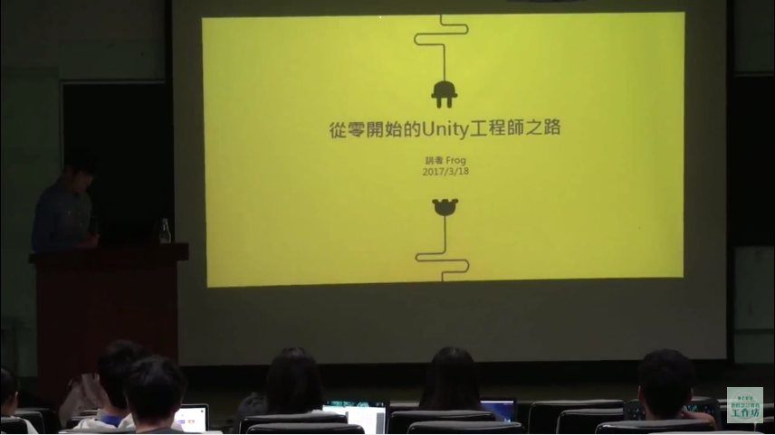

NCKU遊戲設計實務工作坊

是由成功大學電機分子生醫資訊實驗室、雲嘉南區域教學資源中心共同扶植成立，針對非遊戲相關科系大專院校學生、碩士生，提供遊戲企劃、遊戲設計相關課程的教育型工作坊。我們提供獨立遊戲相關的課程，從遊戲企畫、程式、腳本的撰寫，一直到遊戲完成之後的行銷推廣。此外，我們鼓勵學生獨立開發，透過分組的方式，在課程期間製作一款屬於自己的遊戲。
2014第一屆遊戲工作坊上課照片：報名參加的大學生眾多，座位供不應求
本工作坊成立之初，在電機系教授張天豪老師的指導協助下，工作坊共有三個核心理念：
1.帶領學生探索獨立遊戲設計過程：

眾所皆知，成大並沒有遊戲設計相關科系，台灣幾所知名國立大學，諸如台、清、交等大學也沒有。不像國外，日本、韓國、歐美等國家，都相當重視以遊戲、電影產業為主的「內容產業」。哈佛大學甚至有門以訓練未來遊戲領導人才為目的的遊戲美術碩士學程。本工作坊成立的理念之一，就是讓成大的學生，在講師的帶領下，能夠學習、並且實作一款獨立遊戲。
學生期末企劃作品：Emile's Diary
2.將遊戲與公眾議題結合，對社會產生正面的影響力
遊戲只有提供娛樂的功能？或如部分家長所認為，是讓人成癮、墮落的產物？本工作坊對這點提出挑戰：在工作坊的實作課程中，我們不只教導學生製作遊戲，還會要求學生思考，如何把遊戲內容與公眾議題結合。對社會造成正面回饋。例如國外南加大的學生，曾經設計一款協助自閉症兒童的遊戲。本工作坊希望把這樣的理念引以為目標，在環保、教育、醫學等公眾議題上，能夠有所貢獻。
3.引進國外「翻轉教育」理念，訓練培養學生獨立思考與創意思維
高中之前的教育模式，幾乎所有的知識，都是老師透過書本、講義，用授課的方式傳授給學生。鮮少讓學生自己動手實作，頂多只有讓學生按照書上的步驟來進行實驗。在NCKU遊戲設計實務工作坊中，除了前四週的概念課程，之後講師將讓學生直接進入實作階段。所謂的實作，就是讓學生學會如何撰寫遊戲企劃、如何設計角色、如何與團隊進行溝通。我們所做的第三個嘗試，就是翻轉了傳統教育的規則，不是表面上的翻轉，而是實際讓學生自己上台發表自己的遊戲企劃。在此期間，講師只扮演了引導者的角色，和其他學生一樣坐在檯下，討論大家的創意。

工作坊定期邀請外校講師來演講，分享業界經驗。
故不管你是成大學生、校外生、同人團體或獨立遊戲工作室，我們都歡迎您成為工作坊的一員。此外，我們也承接遊戲、數位領域廠商之商品設計，遊戲化概念行銷、遊戲開發相關課程或公眾議題遊戲，均請不吝來信指教。